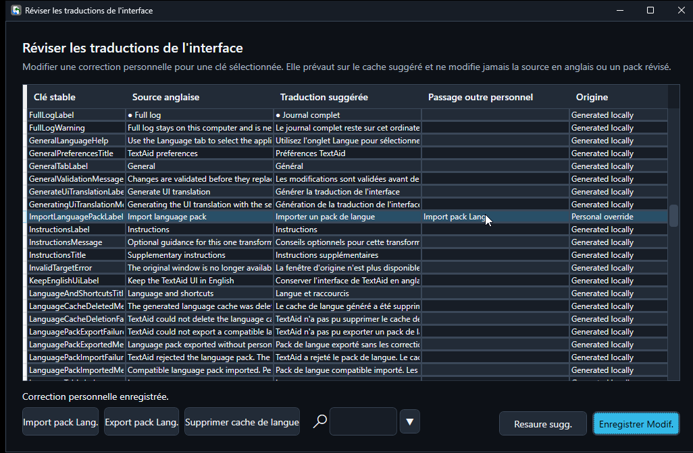

Make the interface your own
The language of TextAid's buttons and menus is independent of the language you ask it to produce.
Two different language choices
Application language
Changes the TextAid interface when a compatible translation is available. It also participates in quick Translate routing.
Output language
Controls the text TextAid generates or translates. The quick Translate preference and an action's output language can be set separately.
You can select a language and still keep the TextAid UI in English by leaving Keep the TextAid UI in English selected.
Generate an interface translation
- In Settings → Language, choose the Application language.
- Select the Profile used to generate a language cache. Its connection must be active for this generation request.
- Choose Generate UI translation. TextAid checks the generated catalog before using it.
- Clear Keep the TextAid UI in English if you want to display the translation, then choose Save.
The generation profile is for this task only; it does not change the profiles assigned to normal actions. English remains available if generation does not produce a valid catalog.
Review and correct the wording
Open Translation review from the application menu. The table shows each stable key, English source, suggested translation, any personal override, and its origin. Select a row, edit its Personal override, then choose Save correction. Restore suggested removes that correction for the selected item.

Corrections must preserve placeholders such as {name}. They stay local and do not alter the English source or a language pack.
Import and export language packs
In Translation review, choose Import language pack to load a compatible, offline JSON pack. TextAid validates the complete pack before replacing the suggested translation cache. An invalid pack leaves the current cache and personal corrections unchanged.
Choose Export language pack to save a compatible pack for sharing. The exported pack contains suggested translations and provenance, not your personal corrections. You can also delete a generated language cache without deleting those corrections.
If something does not look right
- The UI stays in English: check the English UI preference and whether a compatible translation cache is available; generate or import one if needed.
- A pack is rejected: it may be incomplete, incompatible with the installed English catalog, or have changed placeholders.
- A translation sounds wrong: save a personal correction for that key or restore the suggested value.
- An action cannot run: check that its selected profile has an active connection and model in Settings.